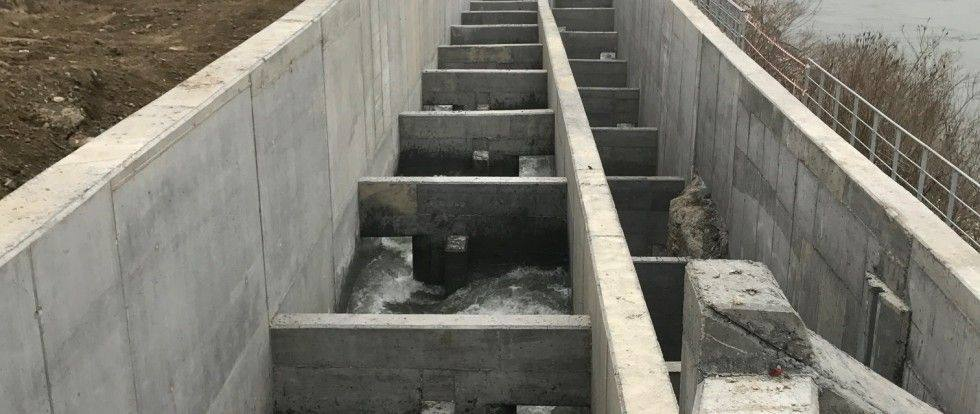

News ·
Il 17 marzo a Isola Serafini riapre ufficialmente la via migratoria dei pesci sul Fiume Po

Il 17 marzo, a due anni dall’avvio del cantiere, viene inaugurato il passaggio per pesci, posto a servizio dei due rami del fiume Po interessati dalla diga idroelettrica di Isola Serafini (Monticelli d’Ongina – PC), a circa 300 km dal delta del fiume nel Mare Adriatico.
La realizzazione di quest’opera permette, dopo oltre 50 anni, di riconnettere al Mare Adriatico almeno altri 100 km a monte della diga lungo il corso principale del Fiume Po, ed il reticolo idrografico ad esso sotteso che si estende per oltre 70.000 kmq, comprendendo i tanti sottobacini, tra cui quello del Ticino sino al Lago Maggiore e al Lago di Lugano.
Di seguito le immagini dell’articolo del Corriere della Sera d2l 28 febbraio 2017 che annuncia l’evento.

Per approfondimenti: